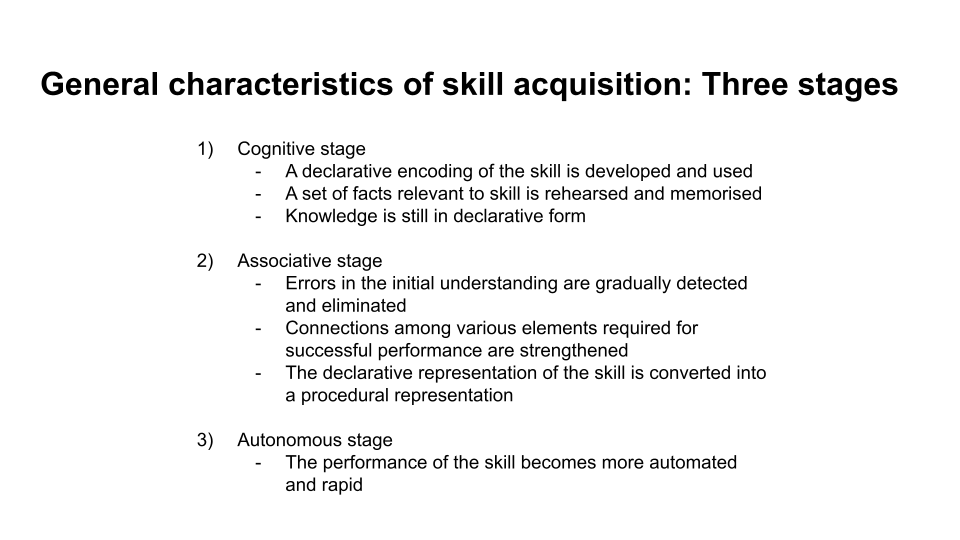
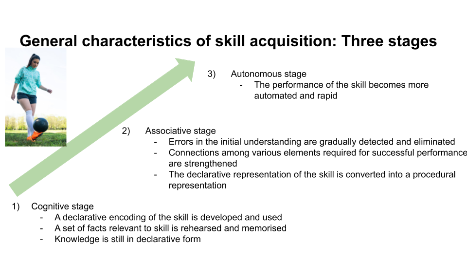
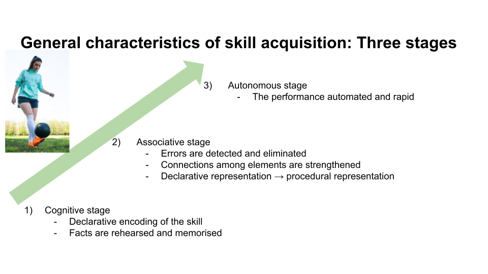
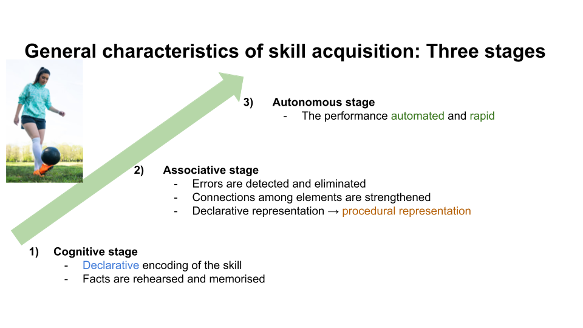

Experimental results
To test the effectiveness of the approach of cognitive slides, we have designed and conducted a small scale study on other students studying Cognitive Science at Aarhus University.
In our study, participants were presented with four sets of slides, each differing in the level of adherence to the principles of cognitive psychology included on our website.
Participants were exposed to four slides, one violating three principles, one violating two principles, one violating one principle and one slide that was in alignment with all of the principles.
These are some example stimuli from the subtopics of expertise:
3 violated
2 violated
1 violated
0 violated

The presented slides were random in the combination of content and number of violations as was the order of the slides shown. Participants were then asked to rate the level of engagement and interest they experienced by being exposed to the slide.
After collecting data from 31 participants, we reached the following results:
It is clearly visible that the slides with more adherence to our principles have reached a higher rating compared to those with more violated elements.
A Pearson's product-moment correlation was conducted to examine the relationship between participant ratings and the number of violated elements. The analysis showed a strong negative correlation between the ratings given to the slides and the overall rating of the presentation
(r = -0.57, p < 0.001, 95% CI [-0.68, -0.44]).
This suggests that as the number of violated elements increases, the mean rating of perceived engagement decreases.
The following model was then used to estimate coefficients for the variable of the number of violated design elements and its impact on the rating of perceived engagement:
lmer(rating ~ slides + (1|ID), data = data)
The model includes the fixed effect of slides as well as random intercepts for ID to account for the assumption of independence, the outcome variable is the rating of engagement perceived by participants. The summary of the model is shown below.
A csv of the collected data can be downloaded here.
A disussion of the results
There are several potential explanations for the results we obtained in our study. One important factor to consider is the design of our experiment. We used three levels, with each of the three principles being tested in a fixed position of the number of violated slides. This design choice may have influenced the results, as participants may have become less sensitive to the differences in slides as more principles were adhered to. Looking at the estimates of the slide levels, we can see that this is likely the case. The difference in mean ratings between slides was greatest between level 2 and level 3, and decreased continuously to the lowest difference between level 0 and 1. Another factor to consider is the specific design principles that we tested and their effect on the general slide design. The principle of creating clarity did not require a spatial redistribution of elements on the slides, while the principles of minimizing text and including visuals did lead to a more noticeable difference in the overall structure of the slide. This may have contributed to the difference of the impact of these principles on the engagement and interest participants reported.